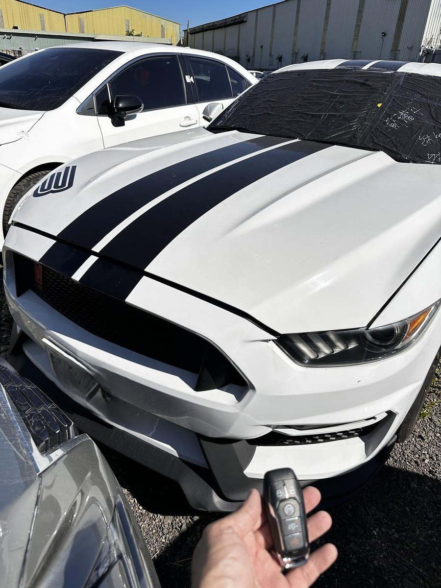

技術前線：Ford Mustang 野馬智慧鑰匙解碼與數據匹配現場實錄
隨著零關稅政策帶動美系車市佔率，經典的 Ford Mustang、冒險者首選 Ranger 以及新款 Explorer 逐漸成為台灣街頭的焦點。入手價格降低雖然誘人，但消費者最容易忽視的，往往是後期電子系統的維修成本——特別是美系車特有的高階防盜系統。
美系車維護的三大痛點
1. 原廠漫長的等待
美系車零件多從北美調度，一旦鑰匙全丟，原廠等待期常達一個月以上。
2. 防盜協議層級高
Ford 的 PATS 系統安全嚴密，極致核心擁有專業授權設備，確保現場解碼不鎖死電腦。